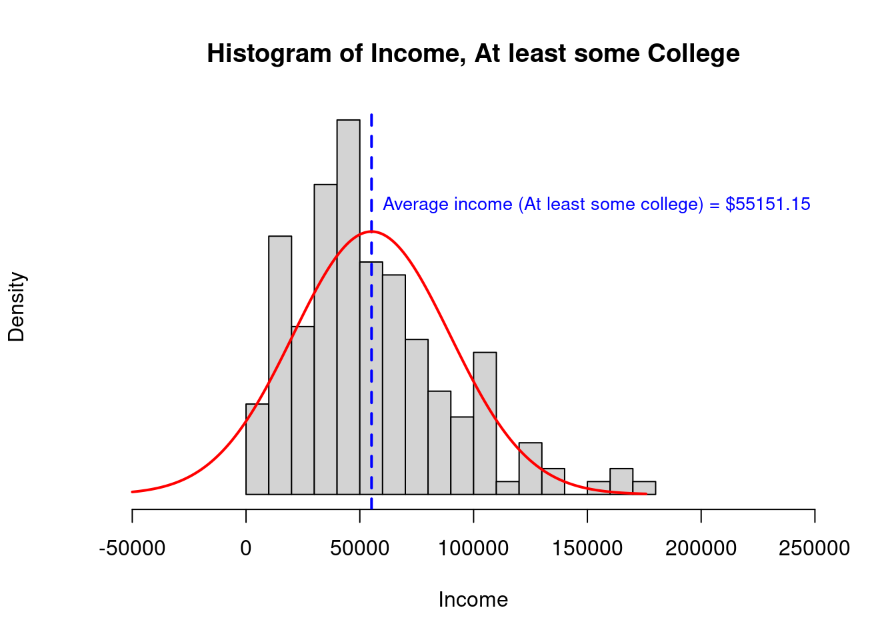
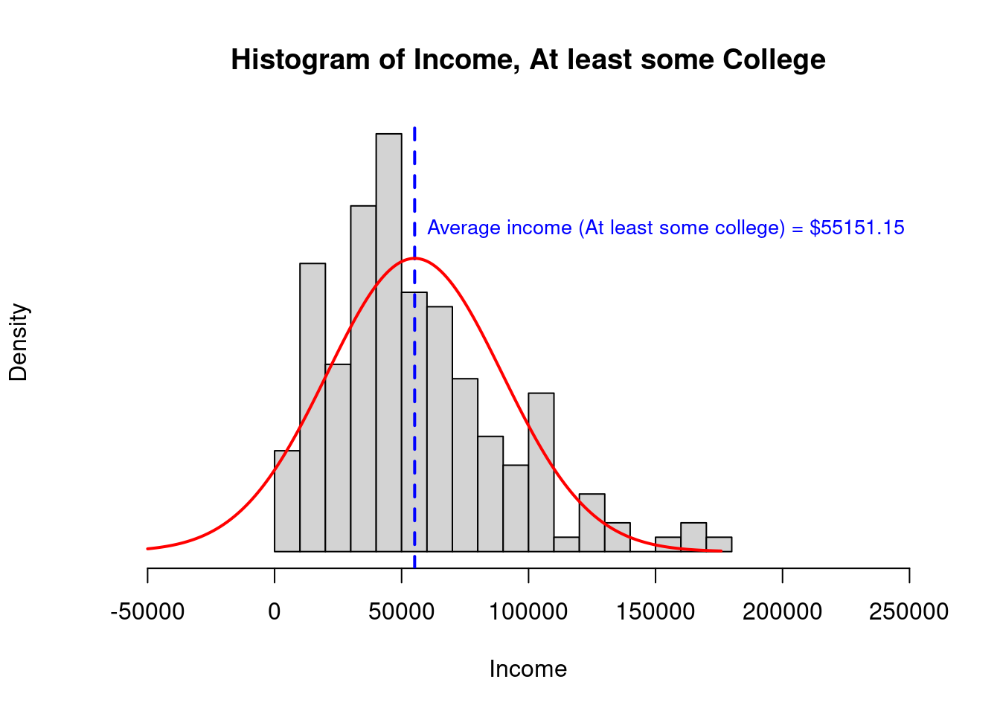
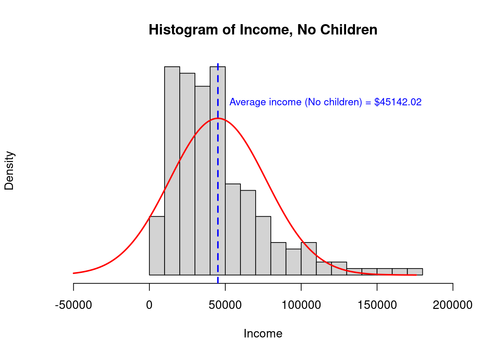
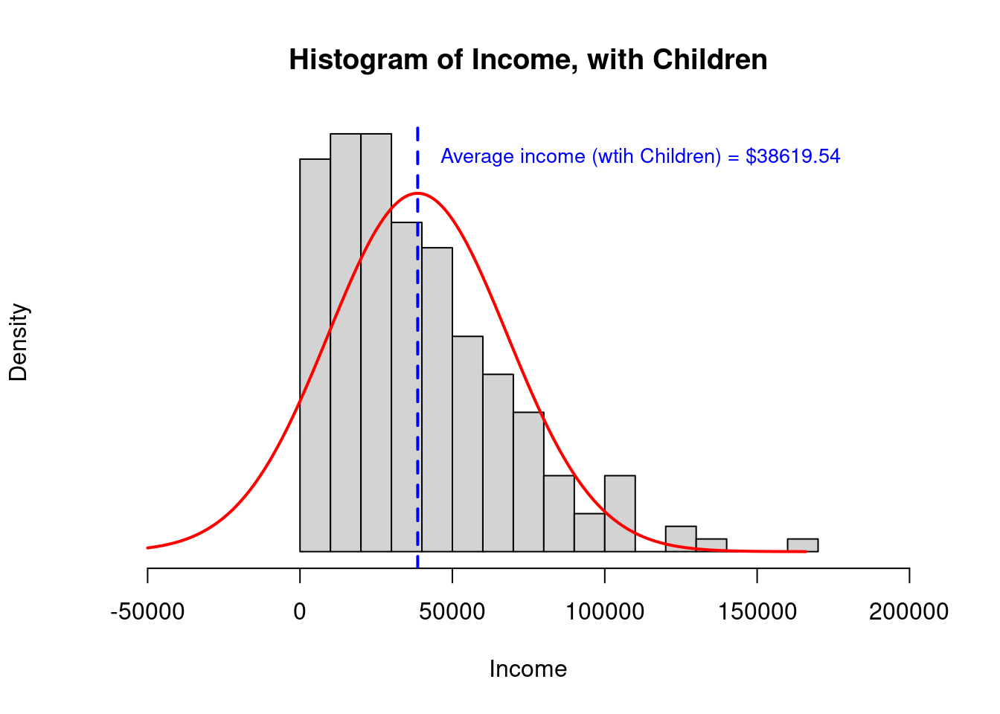

Wilcoxon Rank Sum / Mann-Whitney U Test
Learning objectives of this asynchronous lesson:
- Understanding when to use the Mann-Whitney U test
- Evaluate whether the underlying assumptions of a Mann-Whitney are present
- Write an appropriate null hypothesis, apply test appropriately, and interpret the p-value
Data set
For this set of examples, I will continue to use the sample Cyberville families data created in the t-test page.
data <- read.table(url("https://publish.uwo.ca/~lhornic2/IveyStatistics/Datasets/families.txt"),
header = TRUE)
## suppress scientific notation for ease of reading numbers
options(scipen=99) Using the same set.seed, I can take the exact same random sample from the population. So that I have them for later, I am going to make the variables for HasChildren and HasCollege.
# Using the same random number seed, I will get the same sample from the population dataset
set.seed(11)
# create the random sample dataset for analysis
n <- 400 # sample size
select.obs <- sample(1:nrow(data), n)
study.data <- data[select.obs, ]
# Create a variable identifying whether or not a family has children
study.data$HasChildren <- 0 # initialize the variable
study.data$HasChildren[ study.data$CHILDREN > 0 ] <- 1 # assign a 1 if CHILDREN >0
# make data subsets
data.NoKids <- study.data$INCOME[study.data$HasChildren == 0]
data.YesKids <- study.data$INCOME[study.data$HasChildren == 1]
# Create a variable identifying whether or not the survey respondent has any college
study.data$HasCollege <- 0 # initialize the variable
study.data$HasCollege[ study.data$EDUCATION >= 40 ] <- 1 # assign a 1 if Any College
# make data subsets
data.NoCollege <- study.data$INCOME[study.data$HasCollege == 0]
data.YesCollege <- study.data$INCOME[study.data$HasCollege == 1]Mann-Whitney U Test
The Mann-Whitney U Test compares the distributions of two groups answering the question: Do both groups come from the same population distribution? The null hypothesis is that both groups were sampled from the same population distribution.
The Mann-Whitney U Test provides a non-parametric alternative to t-test.
The Mann-Whitney U test only has two assumptions
- Outcome is a continuous, ordinal, or rank measure (Cannot be binary
or un-ordered categorical)
- Independent observations: The data need to come from a random sample where each observation is independent of other observations
Example 1.
Continuing the example from the MWU presentation, I will demonstrate the built in R function.
Recall that we are asking the question, Do the salaries of men and women associate consultants come from the same distribution?
We have data on all the associate consultants in a department: seven men consultants and five women consultants.
# Because of the small sample size, we can hand enter the data
men <- c(120500, 103000, 187800, 156000, 145800, 190800, 162800)
women <- c(104800, 110000, 102400, 187200, 121500)
men> [1] 120500 103000 187800 156000 145800 190800 162800women> [1] 104800 110000 102400 187200 121500# H0: Men and Women associate consultants come from the same income distribution
wilcox.test(men, women)>
> Wilcoxon rank sum exact test
>
> data: men and women
> W = 26, p-value = 0.2
> alternative hypothesis: true location shift is not equal to 0Observe the p-value is 0.202. Therefore, we do not reject the null hypothesis that men and women associate consultants come from the same income distribution.
Example 2.
In the second example, we will evaluate the question: Do families with and without some college have the same average income?
When we looked at this question before, we saw that the assumptions of a t-test were not well satisfied. The data were right skewed and one population had a much higher variance than the other. While we can use Welsh’s t-test to accommodate heteroskedasticity, combined with the right skewed data, it would be reasonable to be concerned about false findings from a t-test.
Recall the histogram for each sample and the summary statistics:
 

> [,1] [,2]
> study.data$HasCollege 0 1
> study.data$INCOME.avg 31221 55151
> study.data$INCOME.n 224 176
> study.data$INCOME.var 497270750 1189858919
> study.data$INCOME.sd 22300 34494
> study.data$INCOME.se 1490 2600
> study.data$INCOME.lower95 28301 50055
> study.data$INCOME.upper95 34141 60247Recall the results of the two sided t-test:
# Two-sample, two-sided, t-test
# H0: Families with and without some college have the same average income
t.test(study.data$INCOME ~ study.data$HasCollege) >
> Welch Two Sample t-test
>
> data: study.data$INCOME by study.data$HasCollege
> t = -8, df = 285, p-value = 0.00000000000003
> alternative hypothesis: true difference in means between group 0 and group 1 is not equal to 0
> 95 percent confidence interval:
> -29829 -18031
> sample estimates:
> mean in group 0 mean in group 1
> 31221 55151Now, let’s compare the results to the MWU:
# Two-sided Mann-Whitney U Test
# H0: Families with and without some college have the same distribution of income
wilcox.test(study.data$INCOME ~ study.data$HasCollege)>
> Wilcoxon rank sum test with continuity correction
>
> data: study.data$INCOME by study.data$HasCollege
> W = 10906, p-value = 0.00000000000002
> alternative hypothesis: true location shift is not equal to 0Using the MWU test, the p-value continues to be very very small. We reject the null hypothesis that families with and without some college have the same distribution of income.
Example 3.
In the third example, we will evaluate the question: Do families with children have the same average income as families without children?
When we looked at this question before, we did not evaluate the underlying assumptions of a t-test, so we can do that now.
- First, we know that Income is a continuous outcome
- Second, we know the observations are independent of each other
- Third, we observe that the distribution is quite right skewed. This is not Normal data and a small number of very high observations may be influencing the sample means in a manner that will alter the outcome of a t-test. For this reason, I would choose a Mann-Whitney U test over a t-test for these data.
- Fourth, the standard deviation of the two samples is similar, certainly well within what could be accommodated with a Welsh’s correction if all other assumptions were satisfied (but they are not).

> [,1] [,2]
> study.data$HasChildren 0 1
> study.data$INCOME.avg 45142 38620
> study.data$INCOME.n 192 208
> study.data$INCOME.var 1012408474 859609963
> study.data$INCOME.sd 31818 29319
> study.data$INCOME.se 2296 2033
> study.data$INCOME.lower95 40641 34635
> study.data$INCOME.upper95 49643 42604Recall the results of the two sided t-test:
# Two-sample, two-sided, t-test
# H0: Families with and without some college have the same average income
t.test(study.data$INCOME ~ study.data$HasChildren) >
> Welch Two Sample t-test
>
> data: study.data$INCOME by study.data$HasChildren
> t = 2, df = 388, p-value = 0.03
> alternative hypothesis: true difference in means between group 0 and group 1 is not equal to 0
> 95 percent confidence interval:
> 493 12552
> sample estimates:
> mean in group 0 mean in group 1
> 45142 38620Now, let’s compare the results to the MWU:
# Two-sided Mann-Whitney U Test
# H0: Families with and without some college have the same distribution of income
wilcox.test(study.data$INCOME ~ study.data$HasChildren)>
> Wilcoxon rank sum test with continuity correction
>
> data: study.data$INCOME by study.data$HasChildren
> W = 22638, p-value = 0.02
> alternative hypothesis: true location shift is not equal to 0Using the MWU test, the p-value decreases from 0.034 to 0.02. We reject the null hypothesis that families with and without children have the same distribution of income.
Bootstrapping a null distribution
In the next section, I will demonstrate how to use bootstrapping (read: simulation) to generate the null distribution. Bootstrapped p-values are common with non-parametric tests (built into the R function for the test).
Step 1. Generate the null distribution
In the first step, we will write a function to simulate the possible results of a study with two samples, with sample sizes n1 and n2 respectively, thousands of times.
bootstrap.MWU.p <- function(n1, n2, sims = 5000){
null.dist <- rep(NA, length = sims) # initialize a vector to hold results
for(i in c(1:sims)){
## randomly generate random values for samples 1 and 2
null.samp <- runif(n1+n2)
# assign ranks to the combined dataset where the first n1 will be the ranks for sample 1
null.ranks <- rank(null.samp)
# Calculate the U value for group 1 (the null distribution is symmetrical, so we only need 1 side)
U1 <- sum(null.ranks[1:n1]) - n1*(n1+1)/2
null.dist[i] <- U1
}
# calculate the area under the curve from the left of the null distribution
cum.freq <- cumsum(table(null.dist)/sims)
# Combine the U values with 2-sided p-values; then only print the U values for the left half of the curve
p.values <- data.frame(U.value = as.numeric(names(cum.freq)), Two.sided.p = cum.freq*2)
p.values <- p.values[which(p.values$Two.sided.p < 1), ]
return(p.values)
}Now let’s test our function on an example where we know the solution!
## Let's use the null distribution simulator to generate a look up table for our first example
# Generate the p-value table for the first example with n1=5 and n2=7
p.value.table <- bootstrap.MWU.p(5, 7, sims = 10000)
# print the lookup table
p.value.table> U.value Two.sided.p
> 0 0 0.0030
> 1 1 0.0060
> 2 2 0.0110
> 3 3 0.0200
> 4 4 0.0312
> 5 5 0.0502
> 6 6 0.0744
> 7 7 0.1094
> 8 8 0.1492
> 9 9 0.2010
> 10 10 0.2686
> 11 11 0.3470
> 12 12 0.4398
> 13 13 0.5426
> 14 14 0.6564
> 15 15 0.7678
> 16 16 0.8936# recall that the smaller U was 9
p.value.table$Two.sided.p[p.value.table$U.value == 9]> [1] 0.201Step 2. Build a MWU function
We can build our own Mann-Whitney U Test function:
MWU <- function(data1, data2, sims = 5000){
n1 = length(data1)
n2 = length(data2)
# assign ranks to the combined dataset where the first n1 will be the ranks for sample 1
ranked <- rank(c(data1, data2))
# Calculate the U values (must do both because we don't know which will be smaller)
U1 <- sum(ranked[1:n1]) - n1*(n1+1)/2
U2 <- sum(ranked[(n1+1):(n1+n2)]) - n2*(n2+1)/2
minU <- min(U1, U2)
# create the null distribution to look up the p-value
p.value.table <- bootstrap.MWU.p(n1, n2, sims)
# when there are many many possible U values, the precise value might not be in the table...
# so let's pull the closest value
# (added an integer control just in case there are ties in the ranks)
U.position = which.min(abs(p.value.table$U.value - as.integer(minU)))
p.value.sim <- p.value.table$Two.sided.p[U.position]
# with larger sample sizes, the null distribution for the MWU test
# is asymptotically Normal.
# This means we can also calculate the p-value using the Normal distribution
mean.null.U = (n1 * n2)/2
sd.null.U = sqrt( n1 * n2 * (n1 + n2 + 1) /12 )
p.value.Norm <- pnorm(minU, mean = mean.null.U, sd = sd.null.U)*2
# the return statement is what the function prints out
return(cat("Business Statistics Mann-Whitney two-sided U-test",
"Null hypothesis: Both samples are from the same population distribution",
paste("Bootstrapped p-value:", p.value.sim),
paste("Normal distribution p-value:", p.value.Norm),
sep = "\n"))
}Step 3. Test our new function
Let’s compare our own function to the built in function in R
wilcox.test(data.NoKids, data.YesKids)>
> Wilcoxon rank sum test with continuity correction
>
> data: data.NoKids and data.YesKids
> W = 22638, p-value = 0.02
> alternative hypothesis: true location shift is not equal to 0MWU(data.NoKids, data.YesKids, sims = 50000)> Business Statistics Mann-Whitney two-sided U-test
> Null hypothesis: Both samples are from the same population distribution
> Bootstrapped p-value: 0.02024
> Normal distribution p-value: 0.0207950244706736As you can see our home-made function and the Normal approximation method both replicate the built in R function.
Note, to calculate a p-value less than 0.0001, it is necessary to complete more than 10,000 simulations. Similarly, to calculate a p-value less than 0.00001, it is necessary to complete more than 100,000 simulations. Therefore, the Normal approximation approach will be more accurate for extremely small p values.
We can test our function again using the more difficult case of the very small p-value.
wilcox.test(data.NoCollege, data.YesCollege)>
> Wilcoxon rank sum test with continuity correction
>
> data: data.NoCollege and data.YesCollege
> W = 10906, p-value = 0.00000000000002
> alternative hypothesis: true location shift is not equal to 0MWU(data.NoCollege, data.YesCollege, sims = 50000)> Business Statistics Mann-Whitney two-sided U-test
> Null hypothesis: Both samples are from the same population distribution
> Bootstrapped p-value: 0.00004
> Normal distribution p-value: 0.0000000000000169719791396564